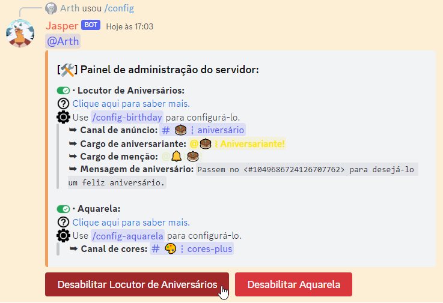

• É preciso que os membros do servidor tenham registrado seus aniversários pelo comando /birthday previamente.
• Configurar essa funcionalidade é algo restrito aos membros do servidor com permissão de Administrador.
• Segue um pequeno tutorial de como configurá-lo:
1. Use o comando /config birthday, selecionando o canal de texto em que
os aniversários serão anunciados e outras configurações opcionais: Cargo de aniversariante, cargo de menção
e uma mensagem personalizada.
2. Assim que usar o comando e a minha resposta for positiva, a funcionalidade já vai estar habilitada
no seu servidor!
3. Prontinho! Agora é apenas aguardar até que algum membro do seu servidor faça aniversário. Os
aniversários são sempre anunciados à meia-noite do horário de Brasília.
4. Para editar as configurações, basta usar o comando /config birthday
novamente. Para desabilitar, use o comando
/config server e selecione o botão.

5. Fale com seus membros para usar o comando /birthday
para cadastrar o aniversário deles! Lembre-se: A data só pode ser alterada a cada 180 dias, logo, confira se
o que você está colocando está correto antes de confirmar.


• Espero que você se aproveite! Qualquer dúvida, sinta-se livre para perguntar no meu canal de suporte.